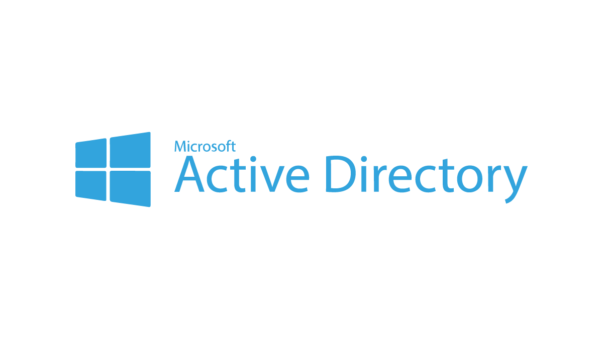

// lab documentation
Lab Documentation Hub
Detailed write-ups for each completed lab — including steps taken, tools used, screenshots, and lessons learned.
// select a lab
Available Documentation

In Progress
Active Directory Home Lab
Full end-to-end setup of a Windows Server Domain Controller in VMware — AD DS installation, DNS, client domain join, and troubleshooting.
Windows Server 2022
VMware
AD DS
DNS
In Progress
Linux Infrastructure Lab
Virtualised Linux environment with web server, file server, SSH authentication, Samba, firewall rules, and system monitoring.
Ubuntu
Samba
SSH
UFW